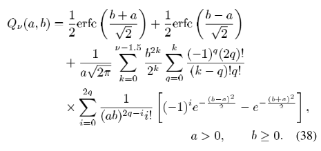
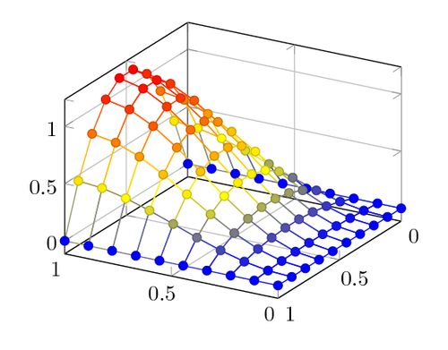
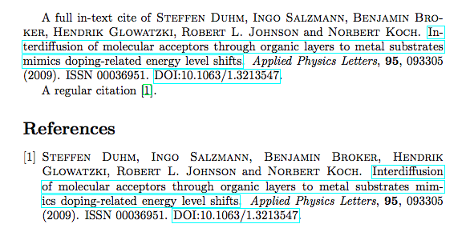
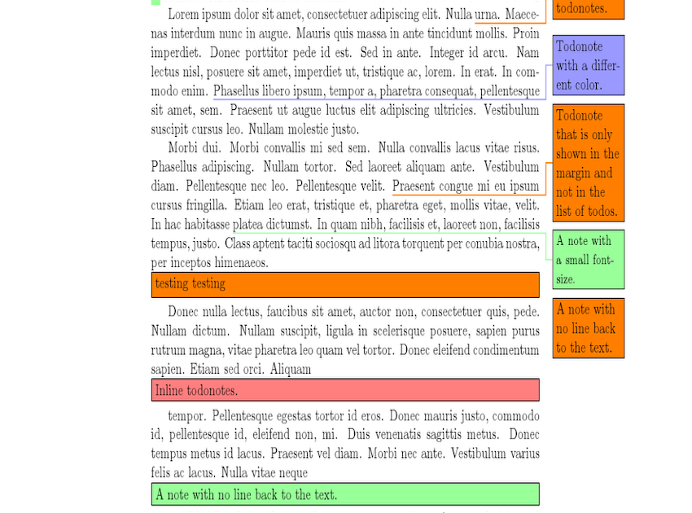
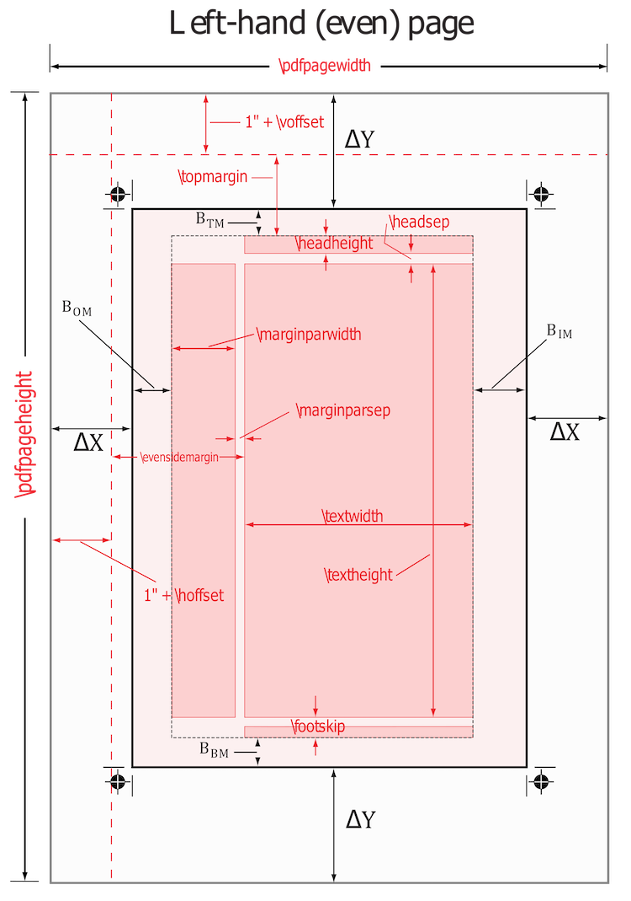

Latex Packages
Most useful packages
Here you can finde the five most useful packages for LaTeX.
1. Amsmath
Amsmath is a very usefull package. it provides many commands for writing mathematical formulas or equations.
It adds many math tools that you can use for mathematical documents.
(Have a look at the page maths with LaTeX where the package is explained more deeply)
(Have a look at the page maths with LaTeX where the package is explained more deeply)

2. TikZ
The TikZ package adds the graphic extension for LaTeX.
It is a very powerful package because it allows you to improve in many ways the graphic of your document.
(Have a look at the page about graphics where the package is explained more deeply)
(Have a look at the page about graphics where the package is explained more deeply)

3. Hyperref
Hyperref is a package that provides the ability to create a hypertext links in your document.
You will have the possibility to include interactive external links and all your internal references will be turned to hyperlinks.
(Have a look at the page hyperref where the package is explained more deeply)
(Have a look at the page hyperref where the package is explained more deeply)

4.Todonotes
This is package add todo notes to your Latex file while you are still working on it.
They will show up as a bubble on the right side of the PDF file, with a line pointing to the actual position in the text.
(Have a look at the page todonotes package where the package is explained more deeply)
(Have a look at the page todonotes package where the package is explained more deeply)

5.Geometry
This is package allows you to set in a simple way the layout of the page, for example the width of a page,
the margins, the orientation and also the paper size.
(Have a look at the page geometry where the package is explained more deeply)
(Have a look at the page geometry where the package is explained more deeply)
